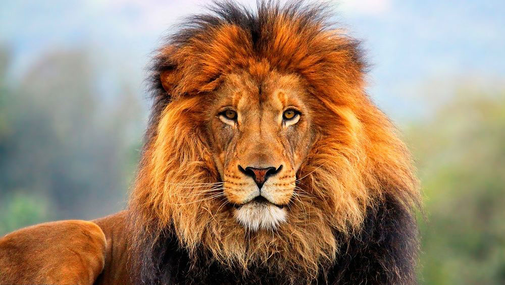
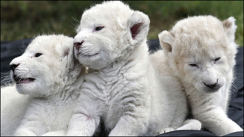
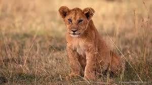
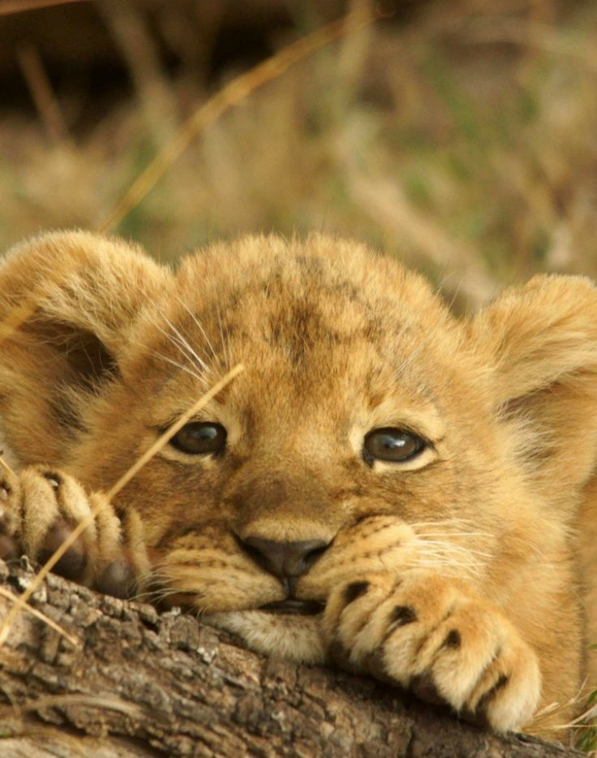

Kión (3 años)
León tranquilo, rescatado de un circo.

Simba (6 años)
Curiosa y activa, viene de un decomiso.

Mufasa (8 años)
Imponente y fuerte, proviene de un zoológico cerrado.

Kovu (7 años)
Fuerte y protector, sobrevivió al abandono en una finca privada.

Nala (3 meses)
Dulce y sabia, proveniente de un zoológico que cerró sus puertas.

Lulu, Lolo y Lola (2 meses)
Curiosos y valientes, rescatados de un criadero ilegal.

Scar (10 años)
Joven y enérgico, fue decomisado en la frontera antes de ser traficado.

Alana (1 año)
Cariñosa y juguetona, rescatada de un espectáculo ambulante.

Zuli (3 meses)
Elegante y tranquila, llegó a la reserva tras ser encontrada en malas condiciones.